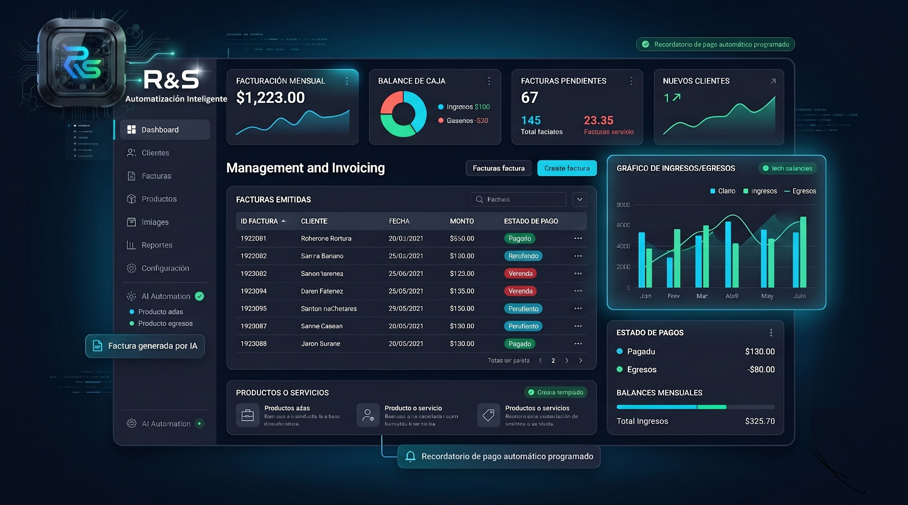

Automatizamos procesos con IA, software e infraestructura técnica
Creamos soluciones digitales a medida para empresas, pymes, comercios y profesionales que necesitan ordenar consultas, monitorear operaciones, mejorar su gestión y reducir tareas manuales.
¿En qué podemos ayudarte?
Seleccioná una solución para ver beneficios y módulos disponibles.
Consultas y seguimiento comercial
Canales ordenados, oportunidades que no se pierden.
- Menos consultas perdidas
- Respuestas más rápidas
- Seguimiento comercial ordenado
- Mayor control de oportunidades
- Captura desde WhatsApp y formularios
- Clasificación de interesados
- Recordatorios automáticos
- Panel de oportunidades
Monitoreo inteligente
Infraestructura vigilada, fallas detectadas antes de escalar.
- Diagnóstico más rápido
- Menos revisión manual
- Control de infraestructura
- Detección temprana de fallas
- Estado de cámaras y servidores
- Reportes en tiempo real
- Diagnóstico técnico
- Alertas automáticas
Gestión y facturación a medida
Sistema simple, adaptado al modo real de trabajo de cada negocio.
- Sistema más simple y usable
- Menos dependencia de planillas
- Reportes más claros
- Menos errores administrativos
- Clientes y ventas
- Facturación simple
- Productos o servicios
- Panel administrativo
Automatización operativa con IA
Tareas repetitivas reducidas, herramientas conectadas, equipos más ágiles.
- Menos tareas repetitivas
- Reportes automáticos
- Procesos más consistentes
- Mayor capacidad operativa
- Flujos con n8n
- Integración de herramientas
- Asistentes internos con IA
- Reportes automáticos
Procesos manuales, consultas dispersas y sistemas que no se hablan entre sí
Diseñamos soluciones para comercios y profesionales que reciben consultas por distintos canales, y para pymes, comercios y equipos que dependen de planillas, chats o tareas manuales. Ayudamos a ordenar esos puntos críticos y convertirlos en procesos más claros, medibles y automatizados, reduciendo la carga de tareas repetitivas.
¿Cuáles son los cuellos de botella más comunes?
- Consultas perdidas: Mensajes de clientes potenciales que quedan sin responder o se contestan tarde.
- Seguimientos informales: Ventas o contratos que se intentan ordenar con memoria, cuadernos o chats sueltos.
- Tareas repetitivas: Horas perdidas copiando datos a mano entre emails, Excel y CRM.
- Infraestructura a ciegas: Cámaras de seguridad o servidores críticos que fallan sin que nadie lo note a tiempo.
- Sistemas rígidos: Programas de gestión gigantescos, difíciles y costosos que no encajan en el negocio real.
Soluciones digitales para automatizar, monitorear y gestionar mejor
Combinamos IA, automatización, desarrollo a medida e infraestructura técnica para crear soluciones adaptadas a cada empresa.

1. Automatización de consultas y seguimiento comercial
Organizamos consultas, clientes potenciales y oportunidades comerciales para que ningún contacto se pierda y el seguimiento sea más simple y ordenado.

2. Monitoreo inteligente de cámaras y sistemas críticos
Detectamos fallas, generamos reportes y orientamos al técnico con información clara sobre cámaras, servidores o infraestructura crítica.

3. Sistemas de facturación y gestión a medida
Diseñamos sistemas simples para pymes, comercios y profesionales que necesitan facturar, ordenar clientes, registrar ventas y consultar reportes sin plataformas complejas.

4. Automatización operativa con IA
Integramos herramientas y procesos para automatizar tareas repetitivas, generar reportes, enviar alertas y asistir equipos internos.
Así se ve una consulta que no se pierde
Cada mensaje que llega — por WhatsApp, formulario o redes — queda registrado, asignado y con seguimiento visible para todo el equipo. Sin planillas, sin memoria, sin nada que se escape.
Hablar con nosotros
Soluciones que podemos construir a medida
Cada empresa trabaja de forma distinta. Por eso no ofrecemos soluciones genéricas: analizamos el proceso, detectamos tareas repetitivas o puntos críticos, y diseñamos una herramienta adaptada al problema real.
Monitoreo inteligente de cámaras
Detectá fallas, consultá estados y generá reportes técnicos de cámaras, servidores o sistemas críticos desde un panel centralizado.
Facturación simple para pymes, comercios y profesionales
Ordená clientes, productos, ventas y reportes con un sistema adaptado a tu forma de trabajo, sin complejidades innecesarias.
Seguimiento comercial para inmobiliarias
Organizá interesados, propiedades consultadas, próximos contactos y oportunidades comerciales en una misma interfaz estructurada.
Automatización de consultas comerciales
Centralizá consultas de distintos canales (WhatsApp, Instagram, formularios), clasificá interesados y generá seguimientos automáticos.
Dashboards administrativos
Convertí datos dispersos en reportes visuales de ingresos, gastos, movimientos o actividad operativa del negocio.
Asistentes internos con IA
Creá asistentes personalizados para responder consultas del equipo sobre información interna del negocio, generar documentos o clasificar datos.
Flujos inteligentes con n8n
Conectá formularios, planillas, bases de datos y sistemas locales con herramientas en la nube para reducir el traspaso manual de datos.
Microherramientas a medida
Resolvé tareas repetitivas y cuellos de botella específicos con pequeñas aplicaciones web internas, hechas a la medida de tu proceso.
01 / 08
Facturación, paneles y control operativo en un solo lugar
Diseñamos sistemas para que pymes, comercios y profesionales puedan facturar, registrar clientes, ver ingresos y controlar su operación — sin depender de planillas ni programas complejos.
Hablar con nosotrosAlertas automáticas antes de que algo falle
Monitoreamos cámaras, servidores y sistemas críticos en tiempo real. Cuando algo cae o falla, el equipo recibe una alerta instantánea — sin esperar que un cliente lo reporte.
Hablar con nosotros
Cómo pasamos de un problema operativo a una solución concreta
Relevamos el proceso
Escuchamos cómo trabaja tu empresa, qué tareas consumen tiempo y dónde aparecen los problemas y las demoras operativas.
Detectamos oportunidades
Identificamos qué procesos se pueden ordenar, automatizar, integrar o mejorar mediante el uso inteligente de software y hardware.
Diseñamos una propuesta
Definimos una implementación posible, simple y escalable según el alcance real del problema y los objetivos de tu negocio.
Construimos la primera versión
Desarrollamos un Producto Mínimo Viable (MVP) para probar con casos reales y validar que aporte valor inmediato.
Ajustamos e implementamos
Mejoramos y pulimos la solución de acuerdo al uso cotidiano y te acompañamos en toda la puesta en marcha en tu entorno de trabajo.
Damos soporte y evolución
Realizamos un mantenimiento activo, ajustamos la herramienta al ritmo de tu negocio y la hacemos evolucionar para nuevas necesidades.
Los perfiles detrás de la solución integral
R&S Automatización Inteligente nace de la unión de perfiles complementarios para brindar respuestas robustas tanto en software e inteligencia de procesos como en infraestructura física, redes y comunicación.

Marina Marcos y Soledad Bueno
Comunicación y Marketing Digital — Redes Sociales · Contenidos · PosicionamientoAportan el desarrollo del área de comunicación y marketing digital, coordinando la presencia en redes sociales, la difusión de contenidos, la proyección de la marca y el acompañamiento en campañas orientadas al crecimiento comercial.

Rodrigo Savina
EficyTec — Eficiencia y TecnologíaAporta la visión y experiencia en automatización de procesos, diseño funcional de flujos con n8n, desarrollo de soluciones con IA aplicada, ingeniería electrónica y consultoría de procesos comerciales.

Agustín Rocha
Grupo Rocha Solutions — Seguridad · Redes · EnergíaAporta la infraestructura y capacidad de soporte técnico, administración de servidores, bases de datos backend, seguridad electrónica, instalación de sistemas de cámaras, redes críticas e implementación en campo.
Solicitá una evaluación gratuita
Contanos qué proceso querés automatizar, qué sistema querés mejorar o qué tarea te está consumiendo demasiado tiempo. Analizamos tu caso y te proponemos una solución digital a medida de tu forma de trabajo.